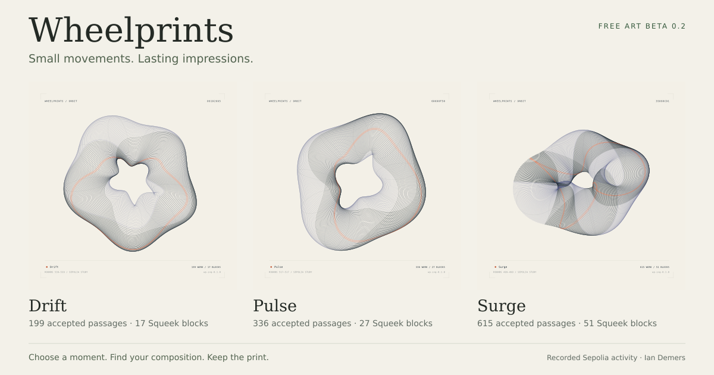

Ethereum Sepolia / rehearsal
A first print.
A practice mint.
Explore the same recorded moments as the art studio, then keep a test token on Sepolia. The mint price is zero. Your wallet pays network gas with test ETH.

Your test print
Choose a moment
Minting stays disabled until a Sepolia deployment has been configured and checked.
View test contract ↗Wallet disconnected
Review this test mint
Your wallet will show the final gas estimate. This transaction creates a Sepolia test token.
One mint per wallet for each composition in this rehearsal. Different wallets can mint the same art variant. Test tokens do not promise a mainnet token, allocation, or reward.
What this rehearsal preserves
The record stays with the token.
Saved in the contract
The source snapshots, selected treatment, visual seed, and artwork fingerprint are fixed for this test release. Metadata is returned by the contract. The images are hosted with this website.
Built from recorded values
The three studies use archived Squeekchain rounds on Sepolia. The deployment checks their cumulative values against the observed Core contract. This is an independent experiment; official project support is unconfirmed.
A rehearsal for the next phase
This tests the wallet, mint, transfer, and metadata experience. A fully onchain art renderer and any mainnet collection require further work and separate decisions.